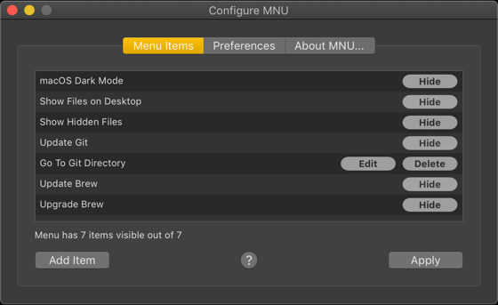

MNU
A macOS menu bar utility
Latest Release: 1.0.0
About MNU
MNU is a macOS main menu bar utility which provides not only a number of handy controls for system settings you may change frequently, but also allows you to invoke shell scripts that you use often.

MNU comes pre-configured with these useful items:
- A switch to enable or disable macOS’s Dark Mode (Mojave and up)
- A switch to show or hide files on the Desktop
- A switch to show or hide hidden files
- A trigger to update your Git repos (requires gitup)
- A trigger to update your Homebrew installation (
brew update) - A trigger to upgrade your Homebrew installation (
brew upgrade)
Any or all of these stock items can be hidden from view if you don’t need them; you can add your own items; and you can re-order the items.
How to Use MNU
The first time you run MNU, it will ask you whether you want it to start automatically the next time you log into your Mac. We recommend that you click Yes, but you can always start MNU manually by double-clicking on its icon. If you click No and subsequently change your mind, you can tell MNU to start automatically by setting the appropriate preference.
If you click Yes when you see the start automatically request or when you first use one of MNU’s items, macOS will request permission to grant MNU the right to access System Events. Please OK this request. macOS will also also you to grant MNU permission to access Terminal. Again, please OK this request.
Important MNU will not fully function without these permissions:

You can always check the permissions granted to MNU by opening System Preferences > Security & Privacy > Privacy > Automation:

How To Configure MNU
To configure MNU, click on the gearwheel icon in the last item on the menu:

MNU’s controls (left to right): Quit,
Configure and Help
This pops up the Configure MNU window: make sure the Menu Items tab is showing:

The Menu Items tab lists the menu items currently set up for MNU in the order in which they appear in MNU. You can reorder the items just by grabbing one item and dragging it to the location you prefer. When you’re done, click Apply to update MNU, or close the window to ignore any changes you have made.
All of the menu items feature a button which allow you to hide any such items that you don’t need. The button is green is its item is shown in the menu, or red if it is not. Just click to hide any shown item. If you later decide you’d like to see a hidden item after all, just click the button (now coloured red) to bring its item back to MNU.
The other buttons, which are disabled for pre-installed items, allow you to edit or delete items you have added yourself:

MNU’s item controls (left to right): Show/hide, Edit and Delete
How to Add and Edit Your Own Menu Items
Initially, MNU contains only the built-in items, but you can add further ones by clicking Add Item in the Configure MNU window. This presents a sheet in which you can enter a Terminal command that can then be invoked from MNU’s main menu. The command can
be a simple request to change directory (for example, cd $HOME), or can be a complex command line sequence that invokes
a script or command and passes in fixed arguments (such as, ~/scripts/myimageresizescript.py -size 640 480):

You will also need to give the command a name by which it will be listed in the MNU menu. This should not match the name of an existing item. When you are done, click Add, or Cancel to discard your changes.
The new item will now be listed in the Configure MNU window’s Menu Items tab, but it won’t be added to MNU until you click Apply; closing the window will cause the new item to be discarded.
Items you have added can be deleted from the list, or they can be edited if you need to make a change: just click on the delete or edit buttons, respectively:
When MNU quits — you have restarted or shutdown your Mac, or you have clicked the quit icon at the bottom of the menu — it saves the current state of the menu so it’s ready for next time.
MNU Preferences
The second tab in the Configure MNU window shows MNU’s preferences.

Currently there is just three:
- The option to start MNU automatically when you log into your Mac.
- The option to run Terminal commands in a new tab.
- The option to show item images in MNU’s menu.
The first of these will initially be set only if you asked MNU to start automatically when MNU gave you this choice on its first run. Checking or un-checking this preference will, respectively, cause MNU to be added to or removed from System Preferences’ Users & Groups > Login Items readout:

We recommend you enable this option so that MNU is always present in your mac’s menu bar when you need it.
Running Terminal commands in a new tab will always ensure MNU doesn’t affect any Terminal tabs you already have open and in which you may be already running a command. If this option is not checked, MNU will always run commands in Terminal’s first tab, whether it is already running a command or not.
MNU presents images to help you identify menu items quickly, including a generic icon for items you have added yourself. If you don’t want MNU to include these images, un-check this option.
The Configure MNU window’s last tab provides some information about MNU:

Please click the Send Feedback button to report any problems you encounter with MNU, or to make suggestions for future functionality. We can’t respond to every feedback message we receive, but we will make a note of all bugs reported and any comments that you have to make about the app.
For more information, please the GitHub repo page.
Release Notes
1.0.0
- Initial public release.


Site copyright © Tony Smith, 2014-19